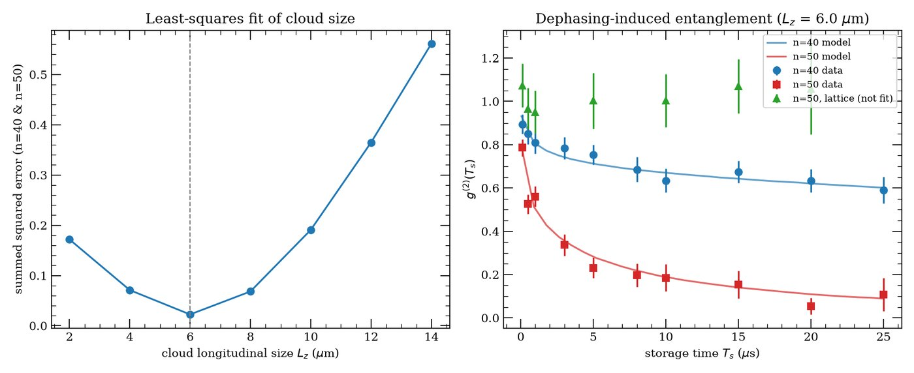
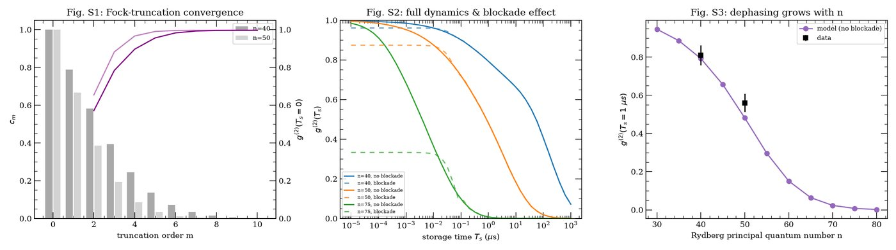
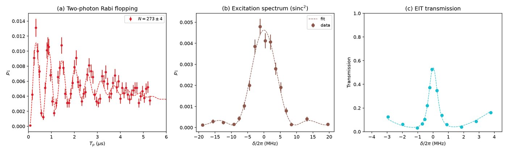
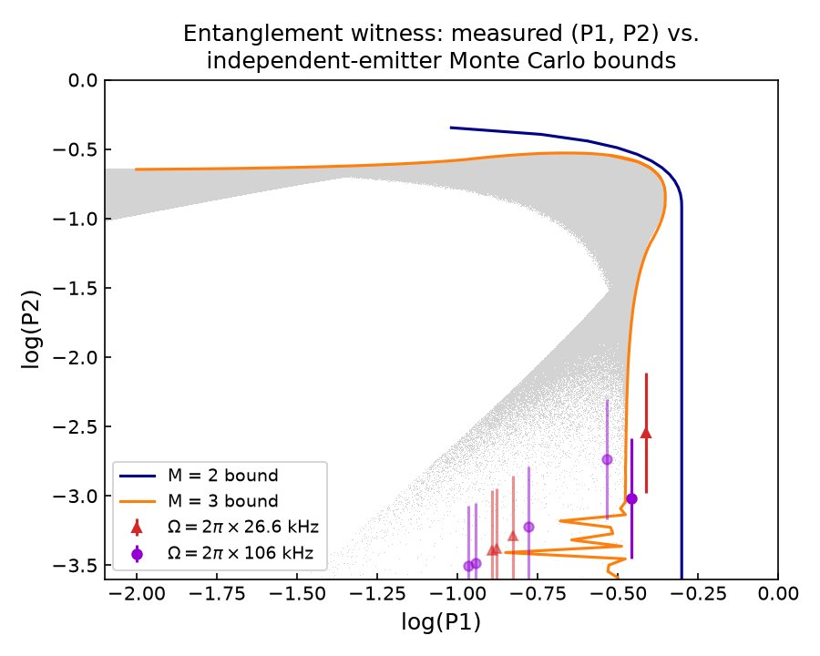

Y. Li, Y. Mei, H. Nguyen, P. R. Berman, A. Kuzmich
The same physics is also reproduced gate-level in Google Cirq, in a private companion repo.
A partial collective Rabi pulse leaves the atomic ensemble in a superposition over different total excitation numbers m, not a single, definite excitation — a Poissonian-weighted mixture of symmetric Dicke states |Dm⟩. That multi-excitation admixture is a problem: the light retrieved from it isn’t single-photon-like, so its two-photon coincidence rate is nonzero.
Interaction-induced (van der Waals) dephasing among Rydberg-excited atom pairs turns out to fix this, rather than simply destroying the state. The dephasing is collective in a specific sense: it damps coherence between different excitation-number sectors as a Gaussian in their separation,
while leaving each fixed-m sector internally untouched. Since the m=1 sector is a maximally entangled W-state across the N atoms, damping its coherence with every other m sector — without damping the W-state itself — progressively purifies the mixture toward that single, genuinely multiparticle-entangled state as the storage time Ts grows. The experimental signature is the retrieved light’s second-order correlation falling toward the single-photon limit,
and the entanglement itself is confirmed independently with a P1–P2 witness: the joint statistics of one-photon vs. two-photon detection events are compared against the boundary a collection of classical, mutually independent emitters could produce — the measured points sit outside that boundary.




g2_storage_time_fit.py — van der Waals dephasing MC fit to real g⁽²⁾(Ts) data; cloud-size extractiondephasing_dynamics_and_truncation.py — Fock-truncation convergence and full g⁽²⁾(Ts) dynamics vs. ncalibration_fits.py — Rabi-flopping, excitation-spectrum, and EIT calibration fitsentanglement_witness_p1_p2.py — Monte Carlo P1–P2 entanglement-witness boundary vs. measured coincidences